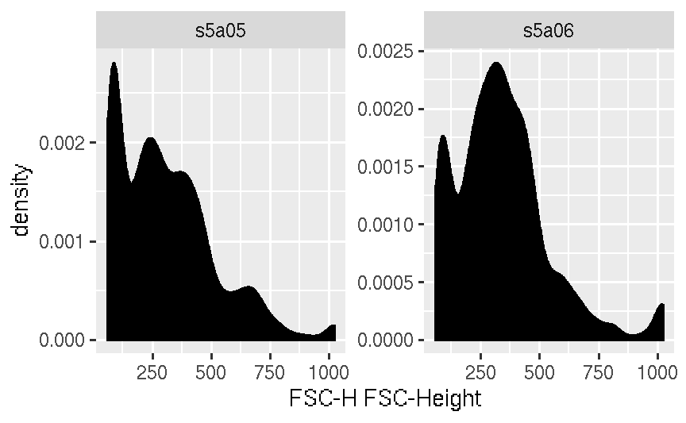
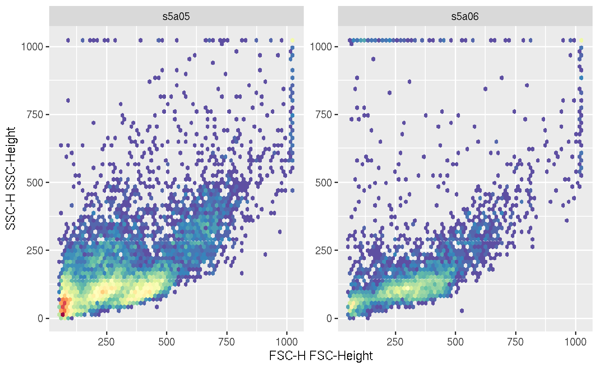
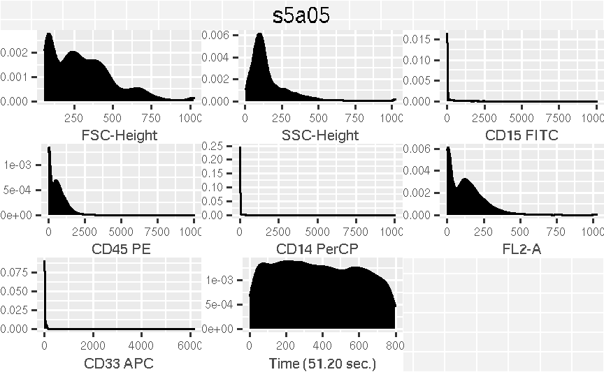
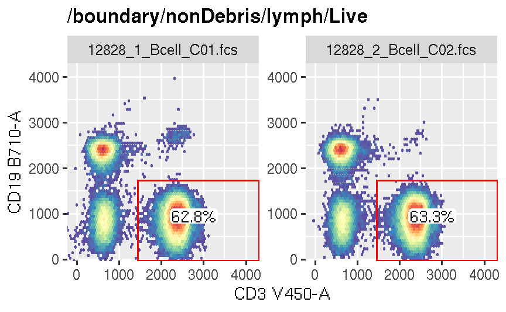
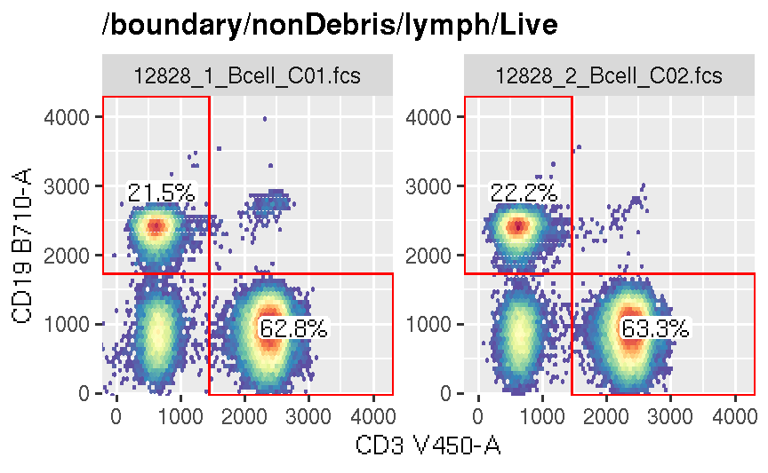
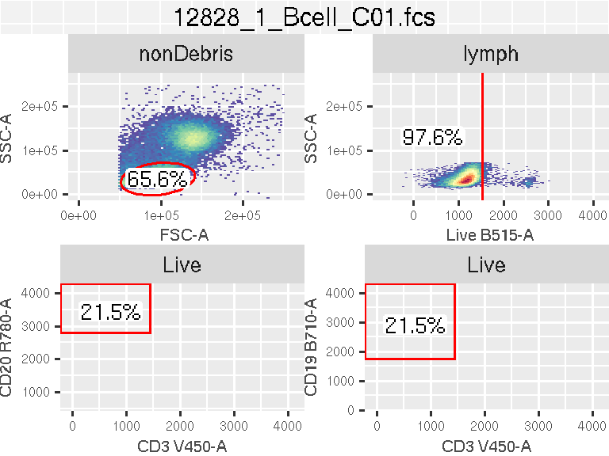
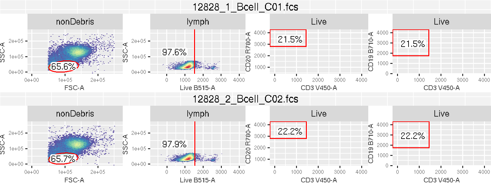

library(ggcyto)
dataDir <- system.file("extdata",package="flowWorkspaceData")
gs <- load_gs(list.files(dataDir, pattern = "gs_bcell_auto",full = TRUE))
data(GvHD)
fs <- GvHD[subset(pData(GvHD), Patient %in%5 & Visit %in% c(5:6))[["name"]]]flowSet
geom_density layer is used for one-dimensional plot.

geom_hex layer is added for 2d plot.
 ## flowFrame For the flowFrame, it can display one-dimensional plots for all channels by not supplying the x argument.

GatingSet

Here are some default settings applied:
ggcyto_par_set(limits = "instrument")).axis_x_inverse_trans/axis_x_inverse_trans.Multiple gates that share the same parent can be plotted together.

GatingHierarchy
Multiple cell populations with their asssociated gates can be plotted in different panels of the same plot.
## [1] "lymph" "Live" "CD20" "CD19"
ggcyto_arrange
Optionally we can manually arrange it as a gtable object and manipulate the layout afterwards.
# get ggcyto_GatingLayout object from first sample
res <- autoplot(gs[[1]], nodes, bins = 64)
class(res)## [1] "ggcyto_GatingLayout"
## attr(,"package")
## [1] "ggcyto"## TableGrob (2 x 4) "arrange": 5 grobs
## z cells name grob
## lymph 1 (2-2,1-1) arrange gtable[layout]
## Live 2 (2-2,2-2) arrange gtable[layout]
## CD20 3 (2-2,3-3) arrange gtable[layout]
## CD19 4 (2-2,4-4) arrange gtable[layout]
## 5 (1-1,1-4) arrange text[GRID.text.1390]# do the same to the second sample
gt2 <- ggcyto_arrange(autoplot(gs[[2]], nodes, bins = 64), nrow = 1)
# combine the two and print it on the sampe page
gt3 <- gridExtra::gtable_rbind(gt, gt2)
plot(gt3)